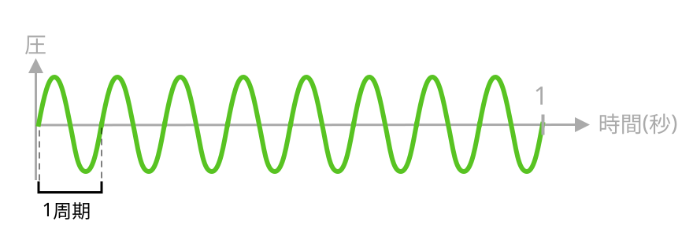
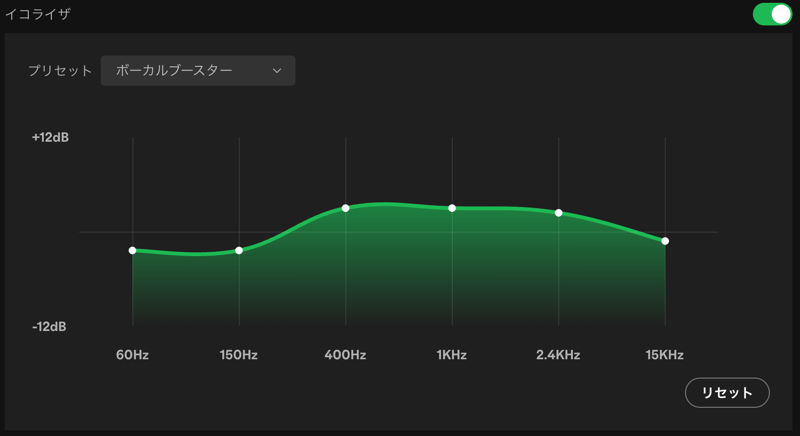
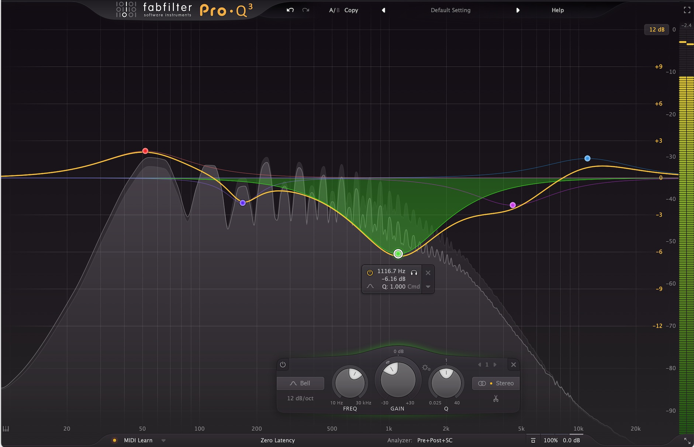

至此，我们已经系统攻克了“音阶”与“调（Key）”的核心机制。按照常规流程，接下来似乎应当顺理成章地迈入旋律篇、和弦篇与节奏篇的分论。然而，在此之前存在着一项更为根本、更为底层的大前提知识亟待我们正视——那便是音色（Timbre）。
钢琴与吉他的音色大相径庭，任何三岁小孩都能凭肉耳瞬间辨别。但在微观的声学物理与听觉生理机制上，两者究竟存在何种本质差异？这项认知构成了现代音乐制作与混音工程的绝对地基。在踏上各大篇章之前，让我们先在此彻底解开音色的声学奥秘。
 1. 频率（Frequency）
1. 频率（Frequency）
讨论音色之前，我们首先需要快速复习中学物理常识——频率（Frequency）。 所谓声音，追溯其物理本质，正是空气分子的疏密振动。声波在空气介质中扩散、撞击人耳鼓膜并向听觉神经传导，从而被我们感知为声音。而衡量声波在1秒钟内完成多少次完整周期振动的物理量，就是频率，其计量单位为赫兹（Hz）。


如上图所示，声波在1秒钟内循环波动了整整8个周期，其频率便是 8Hz。投射到音乐听觉上，频率直接等同于音高（Pitch）：振动频率越高，听起来音调就越高，反之亦然。例如：当一个声音的频率翻倍时，其物理音高恰好在听觉上提升整整一个八度：

人类耳蜗能够感知的声波极限范围大约在 20Hz 至 20000Hz 之间[7]。如雷声般沉闷轰鸣的“超低音”，集中在几十赫兹的超低频区；而如清脆鸟鸣般尖锐纤细的声响，则富集在数千赫兹的高频段。
雷声富集低频成分：
鸟鸣富集高频成分：
频率越高，音调越尖；声波振动的幅度（振幅）越宽，响度听起来就越强。这构成了声学的基础 ABC。
均衡器（Equalizer / EQ）
在宏观音乐编曲中，各个乐器通常各司其职：电贝斯与地鼓霸占低音区，人声与吉他坐镇中频核心区，金属镲片则在高频区闪烁……乐曲通常完整横跨从极低到极高的完整频段。 正因不同乐器在频率版图上分布各异，在流媒体播放软件中，我们常能见到名为**均衡器（Equalizer / EQ）**的声效调节器：

Spotify 均衡器选择“人声增强”模式的频响曲线横轴代表频率分布（越往右代表频率越高），纵轴代表音量增益（越往上代表该频段越响）。 想要低音更劲爆就推升低频，想要人声更清晰就提亮中频——“低频、中频、高频”早已从严肃声学词汇演进为全体音乐爱好者的日常通用常识。
频谱分析仪（Spectrum Analyzer）
究竟一首音乐或某件乐器在微观上包含了哪些具体的频率能量？我们可以借助频谱分析仪（Spectrum Analyzer）（业内简称“频谱仪 / 谱仪”）来进行高精度解剖。频谱仪能够以二维曲线图的形式，精确测算并动态呈现出：①究竟有哪些具体频段、②各自具备多大的能量强度：
<../../../../files/videos/p-spectrum-example-music.mp4>
这是分析一段极简电子音乐的实时影像。分析表明：该乐段在 60Hz 处有一道强劲的超低频脉冲山峰，高频在 10kHz（10000Hz）处耸立着另一座高峰；中频相对稀疏，唯独在敲击某种打击乐器时才会短暂迸发出中频尖峰。借助频谱仪，纷繁抽象的声波被转化为直观可见的物理图景。 这种能量随频率分布的几何分布图谱，在声学中统称为声学频谱（Spectrum）[8]。
调音表（Tuner）的测量局限
然而，频率终究只代表音高（Pitch），绝不等于音色。最好的铁证就是：让不同乐器同时弹奏完全相同的绝对音高，彼此的音色依旧天差地别：
<../../../../files/uploads1/P-tuner-220Hz.mp4>
上面这段视频中，调音表对几件不同乐器进行了实测：虽然调音表一致精准测定它们全都发出 220Hz 的 A 音，但肉耳却能轻而易举分辨出谁是管乐、谁是弦乐。 那么问题来了——究竟是什么在幕后真正决定了乐器的音色？
2. 声音的三要素与物理波形
解答这一终极疑问的核心钥匙，正是波形（Waveform）。 前面我们随手画出的圆润波浪线（正弦波 ）只是世间亿万种声波中的冰山一角。声波震动的微观轮廓形态拥有无穷无尽的可能性。而“波形的轮廓，直接主宰了音色的性格”。 最直观展现这一物理法则的，正是能够人为捏造波形的电子神器——合成器（Synthesizer）。

在经典模拟合成器中，音乐人通过波形旋钮在几种基本波形之间切换，以此孕育出万千音色。其中最著名的5大基础波形如下，让我们眼耳并用地直观对照感受：

从最左侧的正弦波（Sine），依次行进到三角波（Triangle）、方波（Square）、锯齿波（Sawtooth），最后来到纯粹的白噪声（White Noise）。 你能无比直观地感受到：波形的几何边缘越是棱角分明、充满剧烈的锯齿与尖刺折角，其听觉质感就越发显得明亮、开敞、刺耳乃至充满侵略性！声波波形的微观几何轮廓不同，人耳鼓膜与内耳听觉毛细胞的机械摆动轨迹便随之剧变，大脑最终将这套复杂的力学输入解码为不同的“音色质感”。
至此，物理世界的力学变量与人类音乐感知的对应关系彻底闭合：
- 振幅（Amplitude） $\rightarrow$ 映射为 音量响度（Loudness）
- 频率（Frequency） $\rightarrow$ 映射为 音高（Pitch）
- 波形（Waveform） $\rightarrow$ 映射为 音色（Timbre）

音量、音高、音色——这三者在声学上被称为“声音的三要素（Three Attributes of Sound）”。初中物理课通常只教会了频率与振幅，唯独将最美妙的音色略过不谈，在此我们终于补齐了这块拼图。
3. 深入频率成分（Frequency Components）
然而，单凭一句“波形棱角越尖锐、音色越明亮刺耳”的宏观定性描述，依然略显粗糙。现代声学工程追求更加硬核、可量化的数学解析。 此时，前面登场的频谱仪将再度大显身手。频谱仪不仅能分析整首混音，更能把任意一件乐器弹出的“单独一颗单音”彻底解构。例如，我们将贝斯手拨响一根琴弦所爆发出的深沉重低音，直接送入高精度频谱分析仪：
<../../../../files/uploads/2023/10/bass-freq-analyze.mp4>
实测图谱呈现出了令人大为震撼的发现：诚然，在 200Hz 以下的“重低音区”确实耸立着极强的能量主峰；但匪夷所思的是，在远远高过该音区的数千甚至数万赫兹的高空，频谱仪竟然检测到了丰沛而强烈的声学能量！拔弦刹那的高频响应甚至冲破了 10kHz（10000Hz），随后在 2kHz 到 3kHz 频段依然保持着长久的共振！
这颠覆了常人的直觉：哪怕是被人们归类为‘纯正重低音’的贝斯单音，其声音内部其实同样微弱而致密地交织着如同鸟鸣般的高频成分！ 原来，市面上常见的电子调音表在检测音高时，仅仅抓取了整个频谱中位于最底层的那第一座尖锐主峰（本次实测为 55Hz）：

当人类的耳朵倾听这个声音时，大脑依据这第一座核心主峰的频率将其辨识为“音高（A1）”；与此同时，隐藏在其上方漫长频带中的海量高频能量，则被大脑打包解码为‘浑厚’、‘金属颗粒感’或‘温暖包裹感’等美妙的音色质感！ 这些共同寄宿在单一声音之中、由形形色色不同频率交织构成的全套能量家族，在声学中被称为频率成分（Frequency Components）[9]。
打个生活中的生动比喻：这宛如食品工业中的调味原材料。当我们品尝番茄酱时，舌尖第一瞬间捕获的是红番茄的酸甜主味；但在配料表深处，还暗中融合了食盐、酿造醋、洋葱提取物与香辛料。没有人会在吃薯条时特意去细品洋葱的存在，但正是这些暗中融合的丰富副料，才共同构成了所谓正宗番茄酱的醇厚风味。 乐器的音色亦是如此：我们的大脑以主频为锚点识别音高，同时将所有纵向交织的频率成分合冶一炉，作为不可分割的“音色”细细品味。
因此，何为音色的差异？ 站在时域视角审视，是声波的时域波形千变万化； 站在频域视角审视，则是内在频率成分的能量配比截然不同。 两者本就是观察同一物理现象的“一体两面”——数学上的傅里叶变换早已证明：已知时域波形，其频率成分便唯一确定；反之亦然。
4. 倍音（Harmonics）与上音（Overtones）
借助现代频谱仪，我们已经能够将乐器的音色转化为严谨的物理数据。现在让我们更进一步：在这看似随机分布的频率数值背后，是否暗藏着某种神圣的数学秩序？
答案是绝对肯定的。当我们顺着刚才贝斯单音的频谱山峰从左至右逐一记录其峰值坐标时，惊心动魄的数理美感赫然浮现：最低的一座峰值精确落在 55Hz；紧随其后的第二座峰值落在 110Hz；第三座峰值落在 165Hz；第四座峰值落在 220Hz……

你看清其中的数理规律了吗？！ 所有能量最聚集的高峰，全部严丝合缝地分布在起始频率的 2倍、3倍、4倍、5倍 等整数倍率的位置上！(・□・´)
这绝非贝斯吉他独有的偶然巧合，而是自然界中一切具备明确固定音高感的自然发声乐器所普遍共享的绝对物理共性！ 在声学中：
- 频率最低的那座第一峰值，被称为基音（Fundamental）；
- 频率严格呈现基音整数倍率（2倍、3倍、4倍……）的高频成分，被称为倍音（Harmonics / 谐波）；
- 加上微量的非整数倍非谐波杂音，所有频率高于基音的全部高频成分总和，在声学中统称为上音（Overtones）。
基音 (Fundamental) : 在声音复合振动的全套频率成分中，频率最低的核心峰值分量。人类大脑将其解码为该音的绝对物理音高。
倍音 (Harmonics / 谐波) : 在声音的频率成分中，振动频率严格等于基音频率整数倍（2倍、3倍……）的离散成分[10]。 : 术语内涵在日常交流中偶有混淆[11]。
上音 (Overtones) : 声音所包含的全部频率成分中，所有高于基音频率的高频部分的总称。
当需要精确定位某一根具体的倍音声波时，通常以倍率称呼：基音的2倍频称为“第2倍音（第2谐波）”，3倍频称为“第3倍音（第3谐波）”，以此类推。 再次强化这一核心分工：基音锁定了调音表能测出的音高骨架；而上音（泛音列）则统治了音色绝大部分的血肉灵魂！
我们可以通过一个震撼的声学实验来瞬间验证这一结论：假设我们使用极陡峭的均衡器滤波器，将一件真实乐器基音以上的所有上音泛音一刀切除，只留下孤零零的基音，会发生什么？

这是本文开篇那段涵盖了多种原声乐器的音频样本被残酷滤波后的真实声音。请仔细听：你能分辨出哪一段是钢琴、哪一段是小提琴吗？……任何人都不可能分辨得出来！除了极其微小的起音瞬态差异，所有乐器原有的光彩与辨识度荡然无存。
恢复其原本包含完整上音的真实面貌：
一旦抽离了上音，原本丰富多彩的自然乐器瞬间全部退化为索然无味的纯水。这雄辩地证明：人类在欣赏音乐时，耳朵在底层真正品味、享用并为之沉醉的，正是这些千姿百态、繁复错落的上音频率成分！
各种倍音在乐器中绝非均匀平铺，因乐器材质、音区、运音法之异，有的倍音频段被大幅激化，有的则被极大抑制。尽管仪器可将此精密图解，但人类的耳朵与心智却能将其瞬间直觉性地统合为一个浑然天成的整体音色。 ——摘自《乐典：理论与实习》，石桁真礼生 等 著
“直觉性地统合与识别”——不得不由衷赞叹，人类大脑的听觉信号神经计算能力，实在是一座叹为观止的奇迹。
5. 乐音与噪音（Musical Tone vs Noise）
自然界原声乐器的物理频率成分极其复杂，木材箱体的微震、空气流动杂音等共同构成了独一无二的人性化“温度”。而与之相对，现代电子合成器则能够生成自然界绝不可能孤立存在的极简纯净几何数学波形。 我们在前文介绍的5大合成器基础波形，其内在的频率成分同样蕴藏着令人着迷的纯粹数学秩序：

- 正弦波（Sine Wave）：完全没有任何上音成分！ 它是声波宇宙中唯一真正“纯粹只输出单一频率能量”的波形，因此在声学中被尊称为纯音（Pure Tone）。
- 三角波（Triangle Wave）：仅包含奇数倍倍音（第1、3、5、7……倍音），且高频能量衰减极快，因此听感偏向温润柔和。
- 方波 / 矩形波（Square Wave）：同样仅包含奇数倍倍音，但高频能量衰减速度明显慢于三角波，高次谐波充沛，呈现出经典的复古电玩金属鼻音色彩。
- 锯齿波（Sawtooth Wave）：完整包含从第1倍音开始的所有连续自然数倍音（1, 2, 3, 4, 5, 6……）！ 谐波能量极其丰沛密集，因而听感极为霸道、开敞而富有撕裂感。
- 白噪声（White Noise）：全频段（从 20Hz 到 20000Hz）所有频率能量完全均等分布，毫无规律性峰值。
同时请留意一条全声学通用法则：无论何种乐器波形，随着倍音声波的倍数不断拔高，其所蕴含的能量振幅普遍呈现逐步下沉衰减的趋势。
频率成分与“音高感（Pitch Perception）”
反观白噪声，其特性极其特殊：它没有任何离散的谐波山峰，所有频率的声能如同一汪平坦的汪洋均匀铺开。调音表需要依靠捕获明显的单一尖锐峰值来裁定音高；面对这样一团能量完全均等的白噪，调音表彻底抓瞎失灵。在人类听觉中同样如此：由于缺乏基准频率锚点，大脑完全感知不到任何具体音高——白噪声听起来只有一片沙沙作响的宽广气流声，在声学上属于绝对无音高感（Pitchless）的纯粹噪音。
类似的声学形态广泛存在于架子鼓的吊镲（Cymbal）以及打击乐沙锤（Shaker）等乐器中：
<../../../../files/uploads1/P-tuner-noise.mp4>
调音表完全将其视若无物。正因如此，在编曲使用沙锤或大铜镲时，我们从不需要焦虑它“是否与乐曲的调性（Key）相冲突”。然而由于真实打击乐并非绝对平坦的白噪，依然会存在微弱的频段偏向，因此在编曲软件中对打击乐做整体音调（Pitch）移调升降依然是成立且极富表现力的：
而在另一些打击乐中，其自身具备的谐波峰值甚至强大到调音表能清晰感知的地步——例如流行音乐中的军鼓（Snare Drum）：
<../../../../files/videos/p-pitched-snare.mp4>
这枚军鼓一经敲响，频谱仪在 370Hz 附近显示出一道极为醒目的共振尖峰，在十二平均律中精确对应 F♯（升Fa）音！视频中调音表的反应极其生动：第一击由于瞬态杂音未能识别，从第二击开始便迟疑不决地在“F♯？F？”之间反复弹跳。这恰好卡在了“具备音高感”与“纯打击噪音”的微妙交界线上。 这种物理现象具有深远的实战编曲启示：对于带有鲜明音高倾向的军鼓或通通鼓（Tom），其自身的物理共振频率往往会暗中对乐曲的和声织体产生干涉！如果刻意将其调谐到与当前乐曲主干音阶产生严重撞音的关系上，声场便可能隐隐透出一丝挥之不去的怪异脏乱；而若将其调准至与歌曲主和弦根音或五度音共振对齐，整首歌曲的下盘冲击力与凝聚力就会得到立竿见影的惊人升华。
6. 频率成分与现代声音设计实战
深刻透彻理解“频率成分”与“泛音列”，是现代电脑音乐制作（DAW）与混音母带工程的核心命门。
举个最具代表性的经典痛点：在手机外放扬声器或廉价微型耳机中，硬件物理振膜根本无力还原 100Hz 以下的低频振动。然而即便在如此简陋的播放环境下，听众依然能够清晰“脑补”并追踪到贝斯乐器的低沉律动——这其中的幕后功臣，正是贝斯自身所富集的丰富中高次上音（泛音）！尽管真正的深层基音已被微型扬声器彻底物理截断滤除，但人类大脑根据耳朵接收到的成比例的第2、第3、第4倍音，在神经感知中“反向重构并脑补”出了基音的存在（声学上称为“虚拟基音效应”）。 然而，如果你在电子编曲中直接使用毫无上音的纯正弦波来制作超低音（Sub-bass），灾难就会瞬间降临：
在普通手机喇叭上，这段低音几乎彻底人间蒸发！正弦波由于缺乏上音护航，一旦脱离专业大监听音箱就会原形毕露。而深谙声学原理的现代混音师，便会通过施加轻微饱和失真（Saturation / Distortion）或叠加高八度谐波轨道，主动催生出中频谐波链，从而在任何播放端均能获得饱满坚实的听觉存在感：


从声学物理原理出发洞悉音色，你在混音与编曲中便能摆脱盲目猜测，获得居高临下的掌控自由。
7. 与传统和声学（Harmony）的深层羁绊
本节虽然探讨了大量硬核的声学物理与混音工程视角，但它与和声理论（Harmony）同样有着千丝万缕的深厚血缘——事实上，“倍音”在英文中被称为 Harmonics，其词根正是“和声（Harmony）”！许多古典和声大部头甚至会把泛音列作为全书第一章的绝对基石。 在传统和声学中，学者们习惯使用五线谱来直观呈现这串由物理倍率递增展开的谐波序列：
 以 C 音为基音展开至第21倍音的五线谱图示（黑音符代表与十二平均律有较大音分误差的音）
以 C 音为基音展开至第21倍音的五线谱图示（黑音符代表与十二平均律有较大音分误差的音）
尽管在严格物理测算中，倍频与十二平均律钢琴琴键之间存在微小的音分误差[12]，但粗略对照五线谱，由基音出发向天空延伸的这串梯级序列，在乐理中被规范命名为泛音列（Harmonic Series / 倍音列）。
警惕神秘主义与伪科学的包装陷阱
泛音列散发着某种近乎神秘浪漫的宇宙数理美感：既然哪怕弹响单独一颗单音，其内部都暗中潜藏着整整一排高频倍音，那岂不是可以说——“任何单音在本质上都早已是一组微观和弦”？！ 仅凭一颗音符，便包裹着由大自然亲手编织的和谐音网，且各音之间依循物理能量递减确立了尊卑秩序……历史上无数理论家由此陷入狂热，企图一举揭开和声调和的宇宙终极真理，甚至试图以此强行解释为何大三和弦听起来明媚、为何某种和弦走向最具天然向心力。特别是在18至19世纪欧洲古典乐界，围绕泛音列构建所谓“永恒普遍和声法则”的研究更是盛极一时。

即便在当今某些泛乐理读物中，依然时不时能撞见这类言论：“某音听起来不安定是因为它未排进泛音列前列”、“某和弦听起来忧伤是因为泛音之间发生了剧烈拍频撞击”…… 诚然，其中部分假说确实蕴含着极具洞察力的物理直觉。但是，我们必须以最清醒的现代科学态度宣告：这些宏大论断在当下绝大多数仅仅是停留在思辨层面的“未经严格证明的猜想假说”，绝非已被现代脑科学与神经生理学坐实的客观真理！ 要彻底证实这些审美猜想，必须全面打通微观神经生物学与认知科学的壁垒；更关键的是：随着20世纪全球民族音乐学的迅猛突破，针对世界各大非西方古老文明土著群落的实地听觉感知测算证明，许多长期被欧洲传统和声界奉为“全人类普遍客观审美规律”的定论，在异域文明面前纷纷陷入了严重的水土不服与证伪境地[13]。
抱持某种美学假说作为创作灵感是每一位艺术家的自由；但若将其包装成“早已被自然科学铁证如山的唯一公理”去向初学者兜售，便一只脚踏入了伪科学的泥潭。在探索音乐理论的漫漫征途上，保持对科学实证的清醒敬畏，是我们免受思想禁锢的关键护盾。
漫步至此，我们收获了最核心的物理认知：频率成分的能量配比，主宰了声音音色的底层质地。 然而关于音色，大自然还保留着另一半至关重要的终极密码——在下一篇文章中，我们将揭开它的另一副生动面孔！
核心小结
- 音色的物理本质由声音所包含的**频率成分（Frequency Components）**从底层决定，并可通过频谱分析仪进行直观量化分析。
- 绝大多数具备固定音高感的乐器，其声音皆由核心的基音以及成整数倍率展开的**倍音（泛音）**共同编织而成；缺乏离散谐波峰值的声音，人耳的音高感知将极度微弱。
- 广泛分布在非整数倍率上的杂乱频率成分会营造出沙沙的噪音色彩；当所有频段能量绝对均匀铺开时，便演化为完全失去音高感的白噪声。